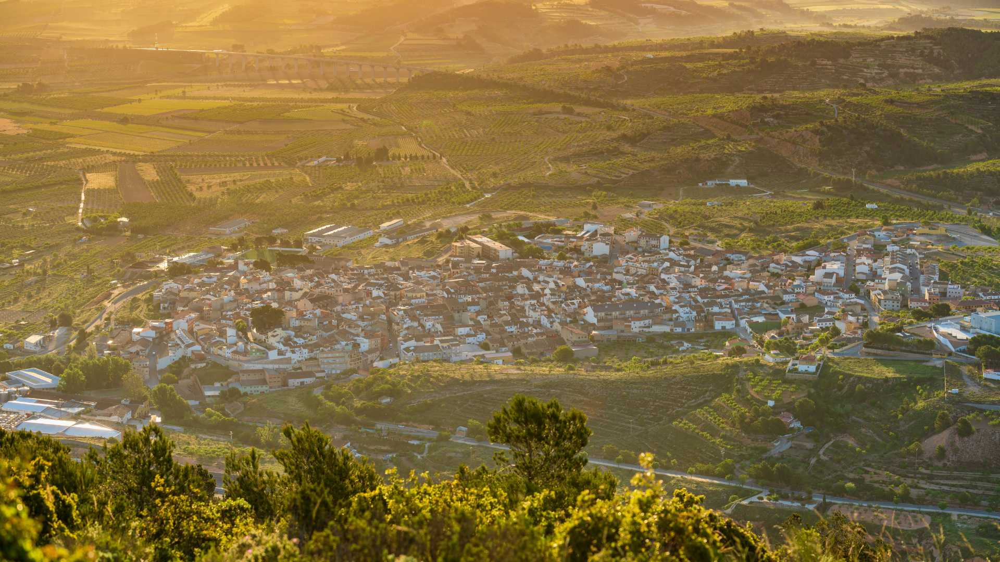

NUESTRA HISTORIA
La figura del conejo en nuestro logo no es casual. Representa nuestro origen, el cuidado por el detalle y la dedicación de una familia. Hacemos tartas de queso porque es lo que mejor sabemos hacer. Sin gelatinas, sin polvos industriales, sin atajos.

El Alma del Obrador
Soy Néstor Soriano López, y Coni Cheesecake nace de la pasión por la repostería honesta y del amor por mi pueblo, La Font de la Figuera. Es aquí, en el corazón de nuestra tierra, donde horneamos cada tarta con dedicación y paciencia.
Mi obsesión siempre ha sido encontrar la receta perfecta: esa que logra una costra exterior dorada, una base de galleta con el punto exacto de mantequilla tostada, y un corazón que se deshace en la boca. Desde nuestro pequeño obrador local, preparamos cada tarta a mano, bajo demanda, para garantizar que llegue a tu mesa en su punto óptimo de frescura y cremosidad.
Solo usamos huevos camperos frescos, una mezcla secreta de los mejores quesos crema nacionales y un horneado milimétrico para conseguir ese centro fundente perfecto. Todo comienza con una base molida a mano y termina en tu mesa. No es solo un postre, es el clímax de tu comida.